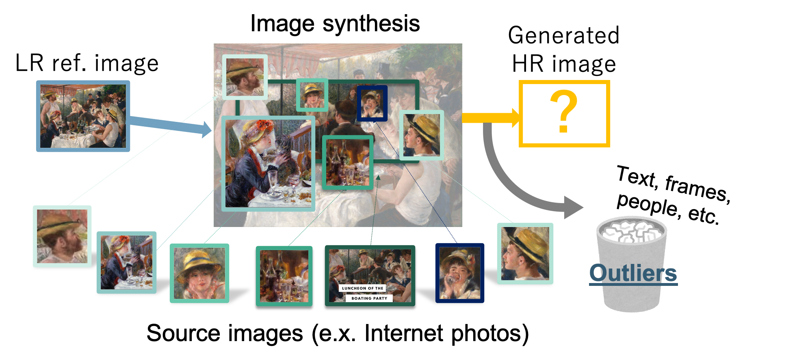

Publications
International Conference Paper
Lilika Makabe, Hiroaki Santo, Fumio Okura, and Yasuyuki Matsushita
Proceedings of IEEE/CVF Winter Conference on Applications of Computer Vision (WACV), 2022.
(Forthcoming.)
[project page]
[paper]
[supp]
Domestic Conference Paper

Lilika Makabe, Michael Waechter, and Yasuyuki Matsushita
23rd Meeting on Image Recognition and Understanding (MIRU), Aug. 2020. (in Japanese)